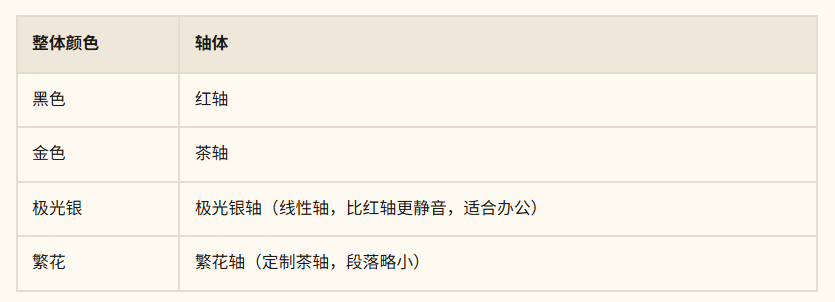

Hello World
Welcome to Hexo! This is your very first post. Check documentation for more info. If you get any problems when using Hexo, you can find the answer in troubleshooting or ask on GitHub.
快速指令
未修改插件或主题时无需 clean。
npm install 新插件，或修改了 _config.yml，建议先 clean 一次。
# 本地预览
hexo clean && hexo g && hexo s# 直接部署
hexo clean && hexo g && hexo d# 日常新增文档时，可跳过 clean
hexo g -d单步指令
新建文章
hexo new "My New Post"More info: Writing
清理缓存
hexo clean启动本地服务
hexo serverMore info: Server
生成静态文件
hexo generate
# equal
hexo gMore info: Generating
部署到远端
hexo deploy
# equal
hexo dMore info: Deployment
初始配置
utteranc setting
<script src="https://utteranc.es/client.js"
repo="zikun-dai/blog"
issue-term="pathname"
theme="github-dark"
crossorigin="anonymous"
async>
</script>CHANGE LOG:
使用HEXO构建框架； 调整UI、主题、联系信息等； 改为使用astro构建框架; 为src\content\posts增加目录结构识别；
表格样式：
卡片表格

圆角外框 + 内部分隔

细分隔线 + 斑马纹

强调表头 + 粗边框网格
改为圆角：